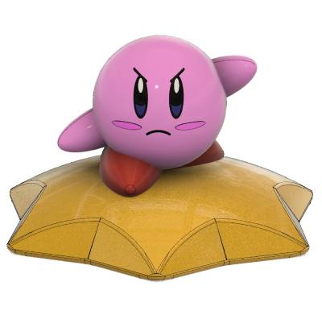
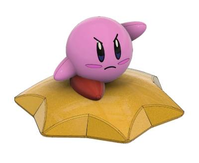
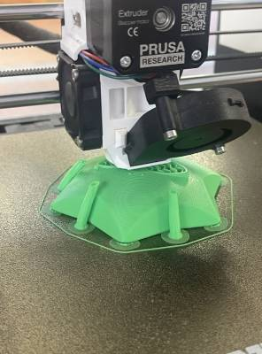
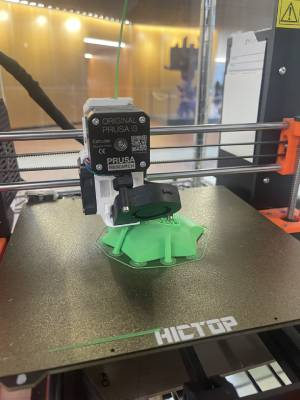
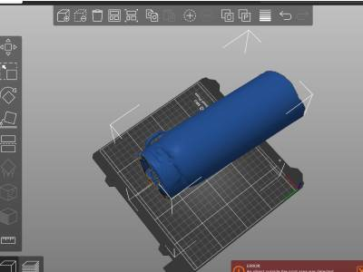
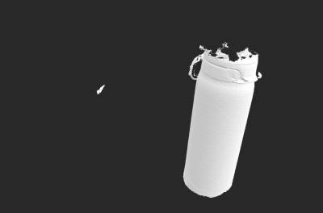

<div class="textcontainer">
<p class="margin"> </p>
<h3>Week 5: 3D Design & Printing</h3>
<h4>Assignment: Model and 3D print something</h4>
For this assignment we were asked to,
<br>
-Design and print either (a) a component you need for your final project or (b) a small object that could not be (easily) made by subtractive methods. Upload your 3D model file (e.g. .f3z), STL file, and sliced gcode file to your documentation.
<br>
-Scan something using the RevoPoint scanner or a photogrammetry application.
<br>
-Update your website with more information about your final project, including a bill of materials, timeline, and project goals.
<br>
<br>
I chose b) which was to create a small object that could not be (easily) made by subtractive methods. My choice of an object was to make Kirby from the game series Adventures of Kirby. My decision to do this was because I thought it would be fun and I wanted to challenge myself in terms of CADing in Fusion with this particular project. In Fusion Kirby is designed as multiple components that come together and i even changed the apperance so it would give a very realistic effect as if it were actually the character from the video game.
<br>
<br>
Here are some photos of Kirby as well as a video of the 3D model:
<br>

<br>
<br>

<br>
<video width="640" height="360" controls>
<source src="Kirby CAD v1.mov" type="video/mp4">
Your browser does not support the video tag.
</video>
<br>
<br>
Here are some photos and a video of the 3D printing process:
<br>
<br>

<br>
<br>

<br>
<br>
<video width="640" height="360" controls>
<source src="3D print.mov" type="video/mp4">
Your browser does not support the video tag.
</video>
<br>
<br>
FINAL PRODUCT:
<br>
<img src="3d-print .jpeg" alt="generic placeholder image">
<br>
<br>
<img src="3d-print yay.jpeg" alt="generic placeholder image">
<br>
<br>
DOWNLOADABLE FILES:
<br>
-Here you can download my STL file of Kirby!
<br>
<a download href='./Kirby CAD v1.stl'>STL file </a>
<br>
-Here you can download my 3D model file of Kirby!
<br>
<a download href='./Kirby CAD v1.f3d'>3D model file </a>
<br>
-Here you can download my gcode file of Kirby!
<br>
<a download href='./Kirby prusa.gcode'>gcode file </a>
<br>
<br>
Now moving on to the second part of this assignment. We were asked to scan something so I used my waterbottle and
I used the software provided from class along with the scanner to produce my scan.
<img src="Helena's waterbottle scan_mesh.obj.jpg" alt="generic placeholder image">
<br>
Unfortunately this was the best I could scan the waterbottle. The top got cut off and it was very hard to fill but I was able to get the general shape of of it as well as the back handle used to carry it and the cap.
<br>
<br>

<br>
<br>

<br>
<br>
Finally I started brainstorming more about how I wanted to approach my final project for this third part of the assignment. I am choosing to create a robotic arm that would pick up seeds and plant them. To start off I was thinking about some ways to apprach creating a tray for where pots of soil and seeds would go that the arm would have to pick up, I also thought about creating a platform for the robotic arm so it has more stability and can complete its tasks more efficiently.
<br>
<br>
Click here to see my progess on the final project:
<br>
<html lang="en">
<head>
<meta charset="UTF-8">
<title>Pink Button</title>
<style>
.pink-button {
display: inline-block;
background-color: #efbbf0; /* Lighter pink */
color: white;
padding: 12px 24px;
border: none;
border-radius: 5px;
text-decoration: none;
font-size: 16px;
font-family: Arial, sans-serif;
transition: background-color 0.3s ease;
}
.pink-button:hover {
background-color: #feabff; /* Deeper pink on hover */
}
</style>
</head>
<body>
<a href="https://hjackson27745.github.io/phys-12/13_finalproject/index.html" class="pink-button">Click Me!</a>
</body>
</html>
</div>